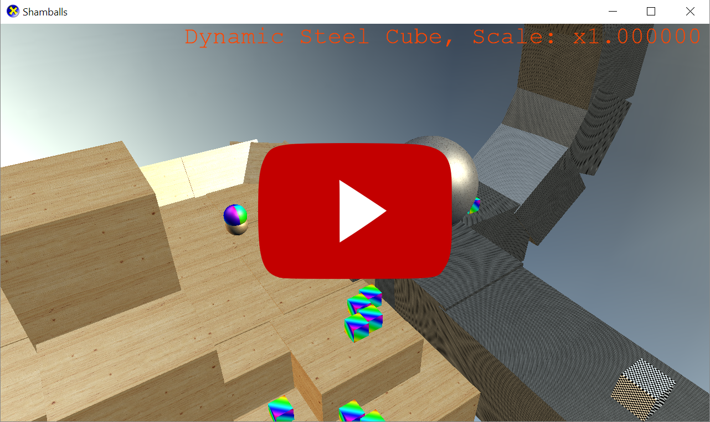
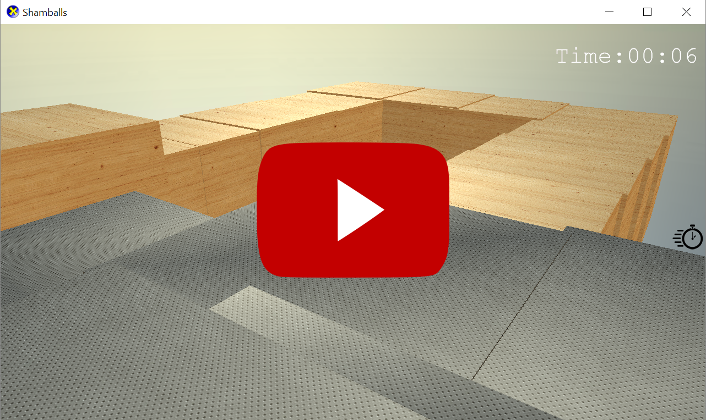

Shamballs
Shamballs is 3D competitive singleplayer & multiplayer game where players can race against the clock on custom made levels or battle it our arena style in the multiplayer mode derby!
Background
Shamballs was a three man project created as a group assignment for the Auckland University of Technology. Shamballs was built using the following technologies and languages:
-
C++
-
DirectX 11
-
DirectX Tool Kit
-
Nvidia PhysX 3.3.3
-
FMOD
This was my second attempt at a game project since KillShot and my second project with C++ and FMOD. However, working with DirectX, the DirectX Tool Kit and PhysX was a new experience but a rather pleasant one. It provided the strength for Shamballs to standout and become the game we set out to make for this assignment.
There was only a few small features that did not make it into the project before the deadline that were in the origional project pitch and ultimately the whole team was fullfilled with what made it into the final cut.
Project Team Members & Contributions
- Marc Tucker - marcedforlife@gmail.com
- Created most of the base game and architecture
- Created the camera system
- Created input control methods
- Created the level editor
- Created the level system
- Co-created the menu system
- Extras, testing & bug fixes
- Sean Chambers - smchambers95@gmail.com
- Implemented sounds
- Created game pickups
- Created game start and finish entities
- Created the resource manager
- Created game timers
- Extras, testing & bug fixes
- Mathew Bielby - mathewbielby3@gmail.com
- Created all the multiplayer components
- Assisted with base architecture including menu design
- Extras, testing & bug fixes
Screenshots
In-Game Time Trial:

In-Game Level Editor:

Videos
Editor & Time Trial Demo: 
Derby Multiplayer Demo: 
Code
Below I have provided the source code that I wrote for my Level Editor in Shamballs:
#include "pch.h"
#include "Editor.h"
#include "Engine.h"
Editor::Editor(Level* level)
{
Initialise(level);
}
Editor::~Editor()
{
if (m_EntitySelection)
{
delete m_EntitySelection;
m_EntitySelection;
}
if (m_Level)
{
delete m_Level;
m_Level = 0;
}
}
void Editor::Initialise(Level* level)
{
m_Level = level;
Engine::GetInstance().m_MenuMgr->AddMenu(MenuType::EDITOR);
Engine::GetInstance().m_Camera->SetCameraMode(CameraMode::FREE);
CycleEntityType(0);
}
void Editor::Update(float deltaTime)
{
if (!(Engine::GetInstance().m_MenuMgr->m_Open))
{
Engine::GetInstance().m_InputMgr->ProcessEditorInput(this);
m_Level->Update(deltaTime);
UpdateCurrentSelection(deltaTime);
}
}
void Editor::Render()
{
m_Level->Render();
if (m_EntitySelection)
{
m_EntitySelection->Render();
}
PrintEntitySelection();
}
// Editor level functions
bool Editor::ValidateLevel()
{
return false;
}
bool Editor::SaveLevel()
{
return false;
}
void Editor::UpdateCurrentSelection(float deltaTime)
{
if (m_EntitySelection)
{
PxTransform transform = (m_EntitySelection->GetPhysicsType() == PhysicsType::DYNAMIC) ? m_EntitySelection->GetDynamicCollider()->getGlobalPose() : m_EntitySelection->GetStaticCollider()->getGlobalPose();
PxVec3 location = Engine::GetInstance().m_Camera->GetWorldLocation();
PxVec3 camRotation = Engine::GetInstance().m_Camera->GetWorldRotation();
float distance = 10.0f;
transform.p.x = location.x + (distance * cos(camRotation.x) * sin(camRotation.y));
transform.p.y = location.y + (distance * sin(camRotation.x));
transform.p.z = location.z + (distance * cos(camRotation.x) * cos(camRotation.y));
Quaternion q = Quaternion::CreateFromYawPitchRoll(m_EntityRotation.y, m_EntityRotation.x, 0.0f);
transform.q.w = q.w;
transform.q.x = q.x;
transform.q.y = q.y;
transform.q.z = q.z;
(m_EntitySelection->GetPhysicsType() == PhysicsType::DYNAMIC) ? m_EntitySelection->GetDynamicCollider()->setGlobalPose(transform) : m_EntitySelection->GetStaticCollider()->setGlobalPose(transform);
m_EntitySelection->Update(deltaTime);
}
}
// Input handling : Selection
// Figure out the new entity type to cycle to
void Editor::CycleEntityType(int input)
{
// We are now below our range so set it to the top
if (static_cast<int>(m_EntitySelectionType) + input < 0)
{
m_EntitySelectionType = static_cast<EntityType::EntityType>(static_cast<int>(EntityType::COUNT) - 1);
}
// We are now above our range so it to the bottom
else if (static_cast<int>(m_EntitySelectionType) + input >= EntityType::COUNT)
{
m_EntitySelectionType = static_cast<EntityType::EntityType>(0);
}
// We are still within range so apply the direction
else
{
m_EntitySelectionType = static_cast<EntityType::EntityType>(static_cast<int>(m_EntitySelectionType)+input);
}
// Spawn the updated selection
SpawnEntitySelection();
}
void Editor::CycleEntitySubType(int input)
{
switch (m_EntitySelectionType)
{
case EntityType::WORLDBLOCK:
// We are bellow our range so cycle to the top
if (static_cast<int>(m_PhysicsSelectionType)+input < 0)
{
m_PhysicsSelectionType = static_cast<PhysicsType::PhysicsType>(static_cast<int>(PhysicsType::COUNT) - 1);
}
// We are above our range so cycle to the bottom
else if (static_cast<int>(m_PhysicsSelectionType)+input >= PhysicsType::COUNT)
{
m_PhysicsSelectionType = static_cast<PhysicsType::PhysicsType>(static_cast<int>(0));
}
// We are still within range so apply the input
else
{
m_PhysicsSelectionType = static_cast<PhysicsType::PhysicsType>(static_cast<int>(m_PhysicsSelectionType)+input);
}
break;
case EntityType::PICKUP:
// We are bellow our range so cycle to the top
if (static_cast<int>(m_PickupSelectionType)+input < 0)
{
m_PickupSelectionType = static_cast<PickupType::PickupType>(static_cast<int>(PickupType::COUNT) - 1);
}
// We are above our range so cycle to the bottom
else if (static_cast<int>(m_PickupSelectionType)+input >= PhysicsType::COUNT)
{
m_PickupSelectionType = static_cast<PickupType::PickupType>(static_cast<int>(0));
}
// We are still within range so apply the input
else
{
m_PickupSelectionType = static_cast<PickupType::PickupType>(static_cast<int>(m_PickupSelectionType)+input);
}
break;
}
SpawnEntitySelection();
}
void Editor::CycleScale(int input)
{
float newValue = static_cast<float>(input) / 2.0f;
float newScale = m_EntityScale.x;
// If the new scale is lower than our min limit, cycle it to the top (max)
if (m_EntityScale.x + newValue < m_ScaleMin)
{
newScale = m_ScaleMax;
}
// If the new scale is higher than our max limit, cycle it to the bottom (min)
else if (m_EntityScale.x + newValue > m_ScaleMax)
{
newScale = m_ScaleMin;
}
// We must be still within our scale, so add the new increment (can be negative)
else
{
newScale += newValue;
}
// Set the new scale
m_EntityScale.x = newScale;
m_EntityScale.y = newScale;
m_EntityScale.z = newScale;
// Update the selection
SpawnEntitySelection();
}
void Editor::CycleTexture(int input)
{
// We are now below our range so set it to the top
if (static_cast<int>(m_TextureSelection)+input < 0)
{
m_TextureSelection = static_cast<TextureName::TextureName>(static_cast<int>(TextureName::COUNT) - 1);
}
// We are now above our range so it to the bottom
else if (static_cast<int>(m_TextureSelection)+input >= TextureName::COUNT)
{
m_TextureSelection = static_cast<TextureName::TextureName>(0);
}
// We are still within range so apply the direction
else
{
m_TextureSelection = static_cast<TextureName::TextureName>(static_cast<int>(m_TextureSelection)+input);
}
// Spawn the updated selection
SpawnEntitySelection();
}
void Editor::CycleShape(int input)
{
// We are now below our range so set it to the top
if (static_cast<int>(m_ShapeSelectionType)+input < 0)
{
m_ShapeSelectionType = static_cast<EntityShape::EntityShape>(static_cast<int>(EntityShape::COUNT) - 1);
}
// We are now above our range so it to the bottom
else if (static_cast<int>(m_ShapeSelectionType)+input >= EntityShape::COUNT)
{
m_ShapeSelectionType = static_cast<EntityShape::EntityShape>(0);
}
// We are still within range so apply the direction
else
{
m_ShapeSelectionType = static_cast<EntityShape::EntityShape>(static_cast<int>(m_ShapeSelectionType)+input);
}
// Spawn the updated selection
SpawnEntitySelection();
}
void Editor::SpawnEntitySelection()
{
// Delete the current (if any) entity selection
if (m_EntitySelection)
{
delete m_EntitySelection;
m_EntitySelection = 0;
}
// Init the new selection entity
switch (m_EntitySelectionType)
{
case EntityType::WORLDBLOCK:
m_EntitySelection = new WorldBlock(EntityType::WORLDBLOCK, m_ShapeSelectionType, m_PhysicsSelectionType, m_TextureSelection, PxVec3(0.0f, 0.0f, 0.0f), Quaternion::Identity, m_EntityScale);
break;
case EntityType::PLAYERSTART:
m_EntitySelection = new PlayerStart(PxVec3(0.0f, 0.0f, 0.0f));
break;
case EntityType::PLAYERFINISH:
m_EntitySelection = new PlayerFinish(PxVec3(0.0f, 0.0f, 0.0f), Quaternion::Identity, m_EntityScale);
break;
case EntityType::PICKUP:
m_EntitySelection = new Pickup(m_PickupSelectionType, PxVec3(0.0f, 0.0f, 0.0f));
break;
}
// Check if an entity was spawned and disable it's simulation flag
if (m_EntitySelection)
{
if (m_EntitySelection->GetPhysicsType() == PhysicsType::DYNAMIC)
{
m_EntitySelection->GetDynamicCollider()->setActorFlag(PxActorFlag::eDISABLE_SIMULATION, true);
}
else if (m_EntitySelection->GetPhysicsType() == PhysicsType::STATIC && m_EntitySelection->GetEntityType() != EntityType::PLAYERSTART)
{
m_EntitySelection->GetStaticCollider()->setActorFlag(PxActorFlag::eDISABLE_SIMULATION, true);
}
UpdateCurrentSelection(0);
}
}
void Editor::PickupSelection()
{
// double check that we aren't holding an entity
if (!m_EntitySelection)
{
PxVec3 location = Engine::GetInstance().m_Camera->GetWorldLocation();
PxVec3 camRotation = Engine::GetInstance().m_Camera->GetWorldRotation();
PxVec3 origin = Engine::GetInstance().m_Camera->GetWorldLocation(); // [in] Ray origin
PxVec3 unitDir = PxVec3(0.0f, 0.0f, 0.0f); // [in] Normalized ray direction
PxReal maxDistance = 30.0f; // [in] Raycast max distance
float cameraDistance = 0.6f;
origin.x += (cameraDistance * cos(camRotation.x) * sin(camRotation.y));
origin.y += (cameraDistance * sin(camRotation.x));
origin.z += (cameraDistance * cos(camRotation.x) * cos(camRotation.y));
unitDir.x = cos(camRotation.x) * sin(camRotation.y);
unitDir.y = sin(camRotation.x);
unitDir.z = cos(camRotation.x) * cos(camRotation.y);
// Raycast
PxRaycastBuffer hit; // [out] Raycast results
// Raycast against all static & dynamic objects (no filtering)
// The main result from this call is the closest hit, stored in the 'hit.block' structure
bool contact = Engine::GetInstance().gScene->raycast(origin, unitDir, maxDistance, hit);
// The raycast hit something
if (contact)
{
// Figure out what the raycast hit and remove it from the current level
Entity* selectedEntity = static_cast<Entity*>(hit.block.actor->userData);
switch (selectedEntity->GetEntityType())
{
case EntityType::WORLDBLOCK:
m_Level->m_WorldBlocks.erase(std::remove(m_Level->m_WorldBlocks.begin(), m_Level->m_WorldBlocks.end(), selectedEntity), m_Level->m_WorldBlocks.end());
break;
case EntityType::PLAYERSTART:
m_Level->m_PlayerStart = NULL;
break;
case EntityType::PLAYERFINISH:
m_Level->m_PlayerFinish = NULL;
break;
case EntityType::PICKUP:
{
Pickup* pickup = static_cast<Pickup*>(selectedEntity);
m_Level->m_Pickups.erase(std::remove(m_Level->m_Pickups.begin(), m_Level->m_Pickups.end(), pickup), m_Level->m_Pickups.end());
break;
}
case EntityType::PLAYER:
m_Level->m_LocalPlayer = NULL;
break;
}
// Set our current selection to what ever the raycast hit
m_EntitySelection = selectedEntity;
}
}
}
void Editor::PlaceSelection()
{
// Add the current selection to the level
if (m_EntitySelection)
{
if (m_EntitySelection->GetPhysicsType() == PhysicsType::DYNAMIC)
{
m_EntitySelection->GetDynamicCollider()->setActorFlag(PxActorFlag::eDISABLE_SIMULATION, false);
m_EntitySelection->GetDynamicCollider()->wakeUp();
}
else
{
m_EntitySelection->GetStaticCollider()->setActorFlag(PxActorFlag::eDISABLE_SIMULATION, false);
}
switch (m_EntitySelectionType)
{
case EntityType::WORLDBLOCK:
m_Level->m_WorldBlocks.push_back(dynamic_cast<WorldBlock*>(m_EntitySelection));
break;
case EntityType::PLAYERSTART:
if(m_Level->m_PlayerStart)
delete m_Level->m_PlayerStart;
m_Level->m_PlayerStart = (dynamic_cast<PlayerStart*>(m_EntitySelection));
break;
case EntityType::PLAYERFINISH:
if (m_Level->m_PlayerFinish)
delete m_Level->m_PlayerFinish;
m_Level->m_PlayerFinish = (dynamic_cast<PlayerFinish*>(m_EntitySelection));
break;
case EntityType::PICKUP:
m_Level->m_Pickups.push_back(dynamic_cast<Pickup*>(m_EntitySelection));
break;
}
m_EntitySelection = NULL;
SpawnEntitySelection();
}
// We don't have an entity currently selected so try pickup the looked at entity
else
{
PickupSelection();
}
}
void Editor::RemoveSelection()
{
// Delete the current (if any) entity selection
if (m_EntitySelection)
{
delete m_EntitySelection;
m_EntitySelection = 0;
}
}
void Editor::PrintEntitySelection()
{
const wchar_t* description = ((m_EntitySelection) ? m_EntitySelection->ToString() : NULL);
Engine::GetInstance().m_spriteBatch->Begin();
Engine::GetInstance().m_font->DrawString(Engine::GetInstance().m_spriteBatch.get(), (description)? description : L"None", Engine::GetInstance().m_fontPos, Colors::OrangeRed, 0.0f,
Vector2((Engine::GetInstance().m_outputWidth / -2.0f) + (std::char_traits<wchar_t>::length((description) ? description : L"None")* 26.0f) + 20.0f, (Engine::GetInstance().m_outputHeight / 2.0f)));
Engine::GetInstance().m_spriteBatch->End();
delete description;
}
// Input handling : Directional
void Editor::ApplyCameraForwardInput(float input)
{
Engine::GetInstance().m_Camera->ApplyForwardInput(input);
}
void Editor::ApplyCameraLeftInput(float input)
{
Engine::GetInstance().m_Camera->ApplyLeftInput(input);
}
void Editor::ApplyCameraVerticalInput(float input)
{
Engine::GetInstance().m_Camera->ApplyVerticalInput(input);
}
// Input handling : Rotational
void Editor::ApplyCameraYawInput(float input)
{
Engine::GetInstance().m_Camera->ApplyYawInput(input);
}
void Editor::ApplyCameraPitchInput(float input)
{
Engine::GetInstance().m_Camera->ApplyPitchInput(input);
}
void Editor::ApplySelectionYawInput(float input)
{
m_EntityRotation.y += input;
}
void Editor::ApplySelectionPitchInput(float input)
{
m_EntityRotation.x += input;
}
Downloads
Download the latest playable alpha build here: Shamballs - Alpha
Download my personal dev-log for the project here: Marc Tucker - Shamballs - Dev Log.pdf
References
Audacityteam.org. (2016). Audacity®. [online] Available at: http://www.audacityteam.org/ [Accessed 23 Oct. 2016].
GitHub. (2016). Microsoft/DirectXTK. [online] Available at: https://github.com/Microsoft/DirectXTK/ [Accessed 23 Oct. 2016].
Docs.nvidia.com. (2016). NVIDIA® PhysX® SDK 3.3.4 Documentation — NVIDIA PhysX SDK 3.3.4 Documentation. [online] Available at: http://docs.nvidia.com/gameworks/content/gameworkslibrary/physx/guide/Index.html [Accessed 23 Oct. 2016].
Jenkinssoftware.com. (2016). RakNet - Multiplayer game network engine. [online] Available at: http://www.jenkinssoftware.com/ [Accessed 23 Oct. 2016].
Fmod.org. (2016). FMOD. [online] Available at: http://www.fmod.org/ [Accessed 23 Oct. 2016].
OpenGameArt.org. (2016). OpenGameArt.org. [online] Available at: http://opengameart.org/ [Accessed 23 Oct. 2016].